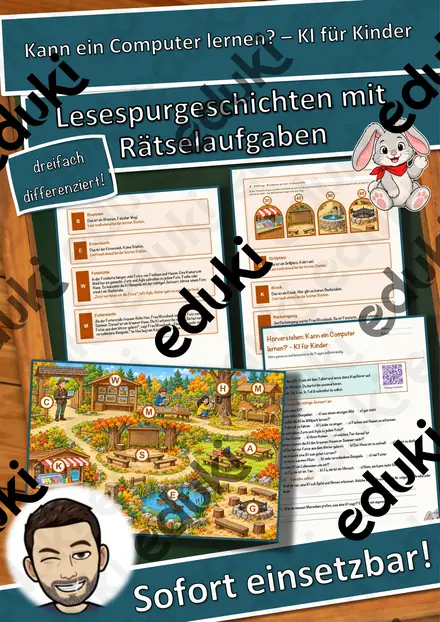
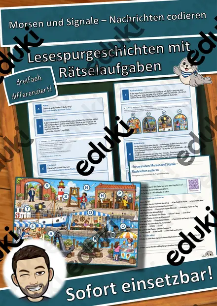
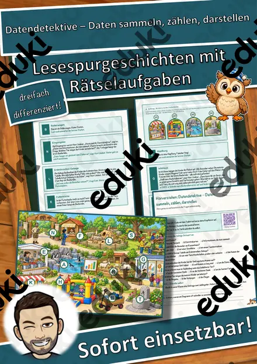
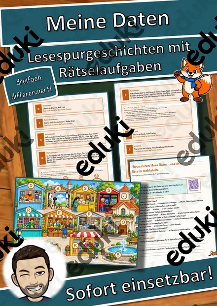
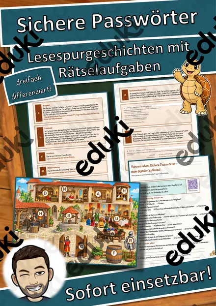
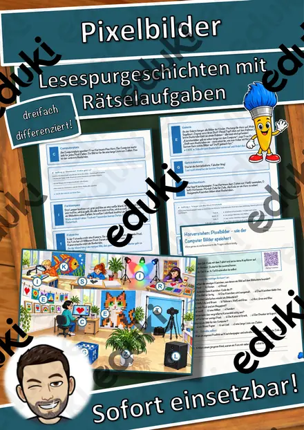
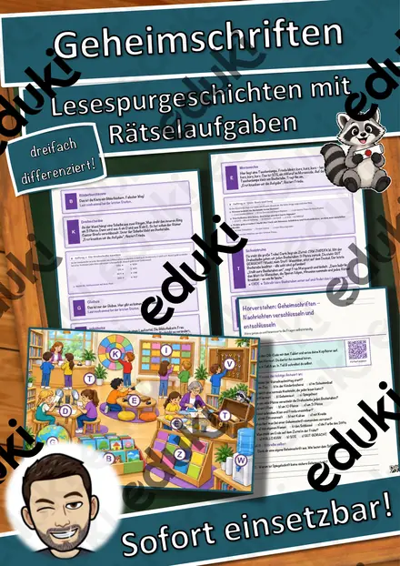

Der Saugroboter – Sensoren und Hindernisse – Lesespurgeschichte mit Rätselaufgaben (Klasse 3)
Der Saugroboter – Sensoren und Hindernisse – Lesespurgeschichte Informatik (Klasse 3)Schick deine Klasse auf eine Lesespur durch das Haus von Opa Heinz! Romy und Kofi aus der 3b wollen herausfinden, wie Opas neuer Saugroboter seinen Weg durch das Haus findet. Im Flur erfahren sie, dass der Roboter ein kleiner Computer auf Rädern mit Sensoren ist, im Wohnzimmer, wie der Stoßsensor eine Wenn-dann-Regel auslöst, und an der Treppe, warum der Roboter nicht hinunterfällt. Im Kinderzimmer bleibt er an einer Socke hängen, in der Küche wartet eine Rechenaufgabe, im Arbeitszimmer zeigt ein Tablet die Karte der Wohnung, im Schlafzimmer schützt ein Sperrband die schlafende Katze – und in der Abstellkammer fährt der Roboter ganz allein zur Ladestation. Romys Stoff-Schildkröte Tilla ist immer dabei. Am Ende jedes Abschnitts verrät ein Hinweis den nächsten Ort auf dem Plan – nur wer genau liest, findet den Weg und sammelt alle geheimen Buchstaben zum Lösungswort.
Die perfekte Lesespur für INFORMATIK und HSU in der 3. und 4. Klasse – ideal für Medienbildung, erste Programmier-Grundlagen (Wenn-dann), Vertretungsstunden und fächerübergreifend mit Deutsch und Mathematik: Sie verbindet sinnentnehmendes Lesen mit Sensoren und Robotern zum Anfassen und Rechenaufgaben bis 100. Das Material ist SOFORT EINSETZBAR, braucht keinen Computer und ist in DREI DIFFERENZIERUNGSSTUFEN (leicht ★ / mittel ★★ / schwer ★★★) angelegt.WICHTIG: Das komplette Material ist sowohl in FARBE als auch in SCHWARZ-WEISS enthalten – ideal zum Sparen von Druckkosten.DAS IST ENTHALTEN
- Lesespurgeschichte in 3 Niveaus (leicht, mittel, schwer)
- farbiger Plan vom Haus mit Garten als Suchkarte
- Hörverstehen mit QR-Code zur MP3 (selbstständiges Hören mit Kopfhörern)
- vier Aufträge auf dem Weg: eine Zuordnung, ein Quiz, eine Rechenaufgabe und ein Steckbrief
- Rätselseite (Wörter-Suchsel + Fragen rund um den Saugroboter)
- Ausmalbild zum Thema (Saugroboter im Wohnzimmer)
- ausführliches Lösungsblatt für die Lehrkraft
- alles zusätzlich als komplette Schwarz-Weiß-VarianteSO GEHT DIE LESESPURDie Kinder lesen ab START, finden im Text den nächsten Ort, suchen ihn auf dem Plan und lesen bei dieser Station weiter. An jeder richtigen Station gibt es einen Buchstaben. Eingeplante Sackgassen im Garten (Gartenhaus, Sandkasten, Briefkasten, Vogelhaus) sind keine Stationen und dienen der Selbstkontrolle. Am Ende werden die gesammelten Buchstaben umgestellt und ergeben ein geheimes Lösungswort. (Die Lösungen sind selbstverständlich nur im Lösungsblatt für die Lehrkraft enthalten.)INHALTLICHER SCHWERPUNKTDer Saugroboter als Computer auf Rädern: Programm und Sensoren als „Sinne“, Stoßsensor und Absturzsensor, Wenn-dann-Regeln, Hindernisse und ihre Grenzen, Akku und Ladestation, Karte der Wohnung und Fahren in Bahnen, Sperrbereiche und Zeitplan – und warum der Roboter nicht selbst denkt.ABGEDECKTER LEHRPLAN (Klasse 3/4, Informatik und HSU)
- Heimat- und Sachunterricht (LehrplanPLUS Bayern) – Jahrgangsstufe 3/4: Technik und Kultur / Leben in einer Mediengesellschaft – Funktionsweise einfacher technischer und digitaler Geräte erkunden, Sensoren und Wenn-dann-Abläufe.
- Deutsch – Jahrgangsstufe 3/4: Texte sinnentnehmend lesen; Hörverstehen mit MP3.
- Mathematik – Jahrgangsstufe 3: Rechnen bis 100, Malaufgaben, Sachaufgaben.
Geeignet für Freiarbeit, Stationenlernen, Vertretungsstunden, Wochenplan, Projekttage und als Einstieg in das Thema Roboter und Programmieren. Klassenstufe 3 und 4.
Ähnliche Materialien

Kann ein Computer lernen? – KI für Kinder – Lesespurgeschichte mit Rätselaufgaben (Klasse 3)

Morsen und Signale – Nachrichten codieren – Lesespurgeschichte mit Rätselaufgaben (Klasse 3)

Datendetektive – Daten sammeln, zählen, darstellen – Lesespurgeschichte mit Rätselaufgaben (Klasse 3)

Meine Daten – was ich im Netz für mich behalte – Lesespurgeschichte mit Rätselaufgaben (Klasse 3)

Sichere Passwörter – mein digitaler Schlüssel – Lesespurgeschichte mit Rätselaufgaben (Klasse 3)

Pixelbilder – wie der Computer Bilder speichert – Lesespurgeschichte mit Rätselaufgaben (Klasse 3)

Geheimschriften – Nachrichten verschlüsseln und entschlüsseln – Lesespurgeschichte mit Rätselaufgaben (Klasse 3)